ENANAS BLANCAS por Camila Guitlein
Las enanas blancas serían el final evolutivo de la mayoría de las estrellas, incluido el sol.
Figura 1. En esta imagen el punto que se ve a la izquierda es una enana blanca conocida como Sirio B.
Está acompañada de la estrella Sirio A que pertenece a la secuencia principal.
CARACTERÍSTICAS:
Cuando una estrella con masa inicial (en ZAMS) menor a ocho masas solares deja de quemar hidrógeno en el núcleo, se aleja de la secuencia principal, continúa en la etapa de gigante roja (quema hidrógeno en capas) y luego, si a partir de la contracción del núcleo se alcanza la temperatura suficiente, empieza a fusionar helio. Después de pasar por la zona de las gigantes en el diagrama Hertzsprung-Russell y atravesando distintas etapas, las capas externas se desprenden hasta que se forma una nebulosa planetaria. Esta nebulosa planetaria deja de brillar, se enfría, y lo único que queda en el centro es una estrella compuesta principalmente por carbono y oxígeno. Nos encontramos así con las enanas blancas.
Las enanas blancas al principio tienen temperaturas muy altas y brillan pero a medida que el tiempo transcurre como no tiene fuentes de energías que no sean de la reserva térmica se irá enfriando y disminuirá su brillo.
Por lo tanto estamos hablando de que Son estrellas muy viejas que están compuestas básicamente por carbono y oxígeno, con un núcleo que posee electrones degenerados pero que en su capa superficial abunda el hidrógeno y helio. En su núcleo ya no se están produciendo reacciones termonucleares lo cual hace que estén en un proceso de enfriamiento.
MASA, RADIO Y TEMPERATURA:
La masa que tienen no supera las 1.4 masas solares, a este límite se lo conoce como “Límite de Chandrasekhar”. Esto se produce por consecuencia del estado en el que se encuentra el núcleo, ya que la presión de los electrones degenerados son capaces de contrarrestar la fuerza de la gravedad sólo hasta esta cantidad de materia. Si se llegara a superar este valor, la estrella colapsará y se convertiría en una estrella de neutrones o un agujero negro.
Las enanas blancas conocidas tiene masas desde 0.17 hasta 1.33 masas solares pero y la mayoría se encuentra entre 0.5 y 0.7 masas solares.
El radio es muy similar al terrestre ya que se encuentra entre 0.008 y 0.02 veces el radio del sol. Entonces tenemos una masa similar a la del sol pero encerrado en un volumen mucho más reducido, lo que implica una densidad muy grande.
Este tipo de estrella tiene una temperatura efectiva entre 4.000 K y 30.000 K, que si estudiamos estos valores con la ley de Stefan-Boltzmann (a mayor temperatura superficial, mayor es la luminosidad) vamos a encontrar luminosidades mucho mayores y menores a la del sol. Como ya dijimos la estrella se va enfriando por lo tanto su espectro se va volviendo más frío y su luminosidad, cada vez menor.
ESPECTRO:
El espectro de las enanas blancas puede presentar distintas morfologías. Se las identificó con la letra “D” y dependiendo de las líneas se clasificó de la siguiente manera:
-
DA: solamente líneas de H
En las siguientes imágenes (figura 1 y 2) vamos a ver ejemplos de espectros correspondientes al tipo DA, que se caracteriza por las líneas de Balmer. Estos están ordenados de mayor a menor según su temperatura efectiva.
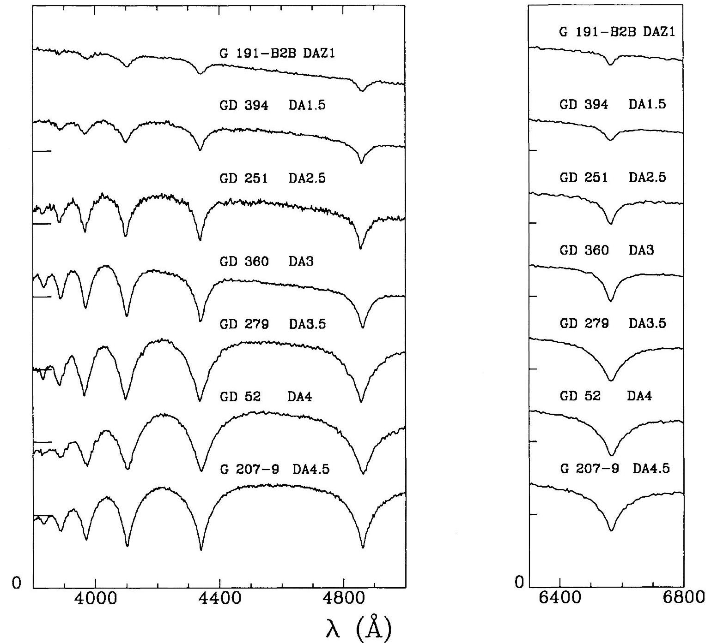
Figura 2: Espectros de enanas blancas del tipo DA correspondientes a distintas temperaturas efectivas.
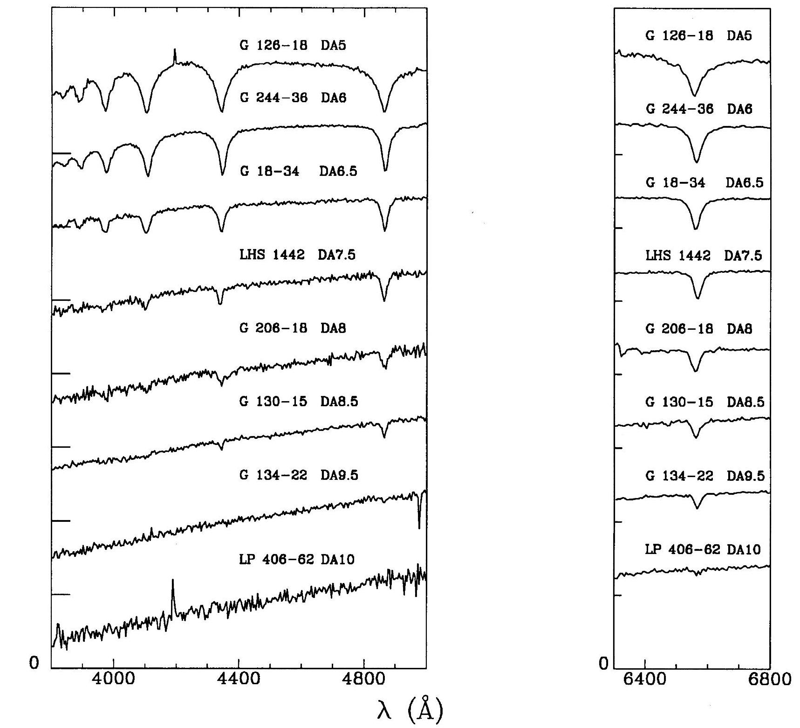
Figura 3: Espectros de enanas blancas del tipo DA correspondientes a distintas temperaturas efectivas.
Cuando en los espectros anteriores (tipo espectral DA) se ven líneas de helio aparece otra clasificación llamada DAO que tiene He II , DAB con He neutro o DAZ con presencia de metales.
- DAO :
Este espectro también es distinguido por las líneas de Balmer pero aparecen las líneas del He II λ4686 (marcada con una línea en la figura) y corresponden a las estrellas DA más calientes.
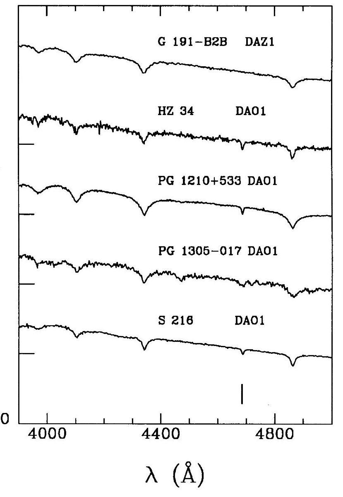
Figura 4: Tipos espectrales de las DAO.
- DAB:
Son espectros que se destacan las líneas de Balmer pero muestran débilmente líneas de He I en particular la línea de He I λ4471. De todas formas en la figura 5 podemos ver también He I λ4026, He I λ4413 Y He I λ4921. Estas estrellas suelen tener una temperatura efectiva alrededor de 25.000K.
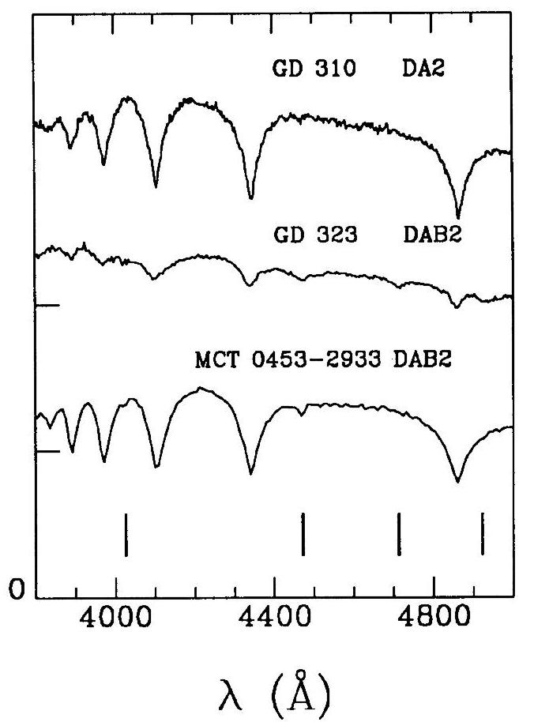
Figura 5: Espectros de estrellas del tipo DAB .
- DAZ:
Este tipo de espectro son las DA que presentan metales. Un ejemplo es la estrella fría, G 74-7 (catalogada como WD 0208+396 con una temperatura efectiva de 7200K) . En la figura 6 podemos ver que el Ca II λ3933 está indicado con una línea.
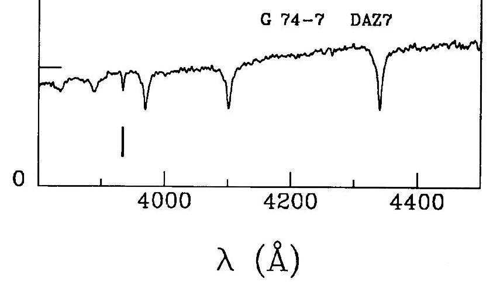
Figura 6: Espectro de la estrella G 74-7
- DO: líneas de He II intensas y puede haber H
Estos espectros suelen corresponder a estrellas con temperaturas efectivas de más de 45.000K. Según su temperatura efectiva se pueden diferenciar los espectros.
Para temperaturas similares a 45.000K: muestran líneas de He I pero la línea que se destaca es He II λ4686 (para temperaturas que rondan los 30.000K el He II ya no es detectado). Un ejemplo de esto sería la HZ 21
Para temperaturas mayores a 80.000K: muestran solo líneas de He II como por ejemplo PG 0038+199. Además sigue siendo fuerte la línea de He II λ4686.
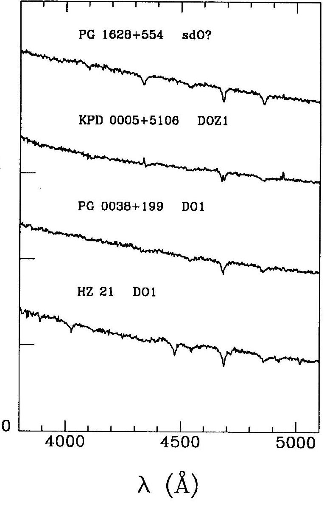
Figura 7: Espectros de estrellas DAO
- DB: solamente líneas de He I
Los espectros de la figura 8 están ordenados según su temperatura, la más caliente es primera (parte superior) y la más fría la última, la cual apenas se puede ver el He I λ4471 (GD 392 DB5)
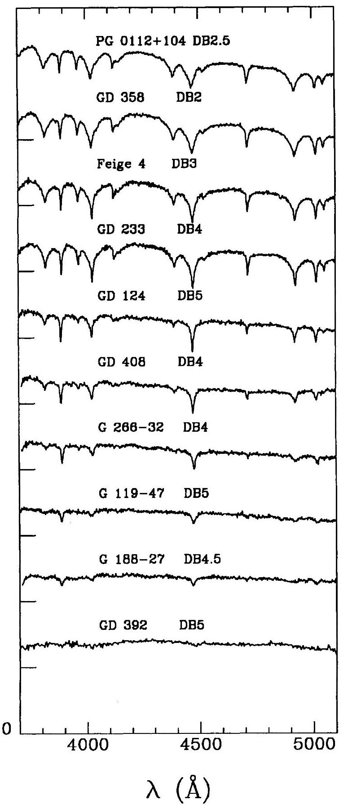
Figura 8 : Espectros de estrellas DB.
- DZ: solo líneas metálicas
Estos espectros muestran líneas metálicas y son por lo general estrellas más frías. En la figura 9 nos muestran marcas, de izquierda a derecha, de los siguiente elementos, Ca II H , K , Fe I λ4045 y Ca I λ4226
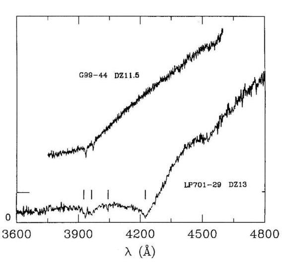
Figura 9 : Espectros de estrellas DZ.
- DQ: se observan líneas de C
Estos espectros corresponden a estrellas frías que se caracterizan por la presencia de bandas de carbono molecular.
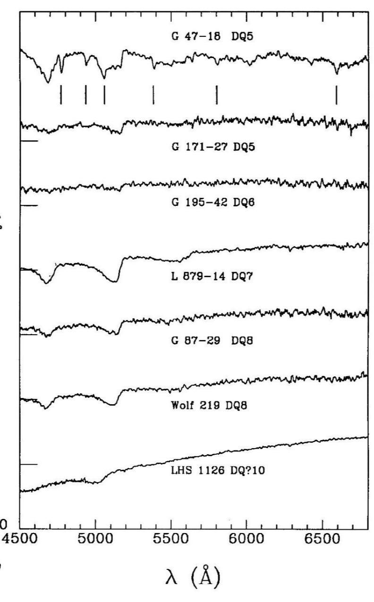
Figura 10 : Espectros de estrellas DQ.
- DC: espectro continuo (sin líneas)
Estos espectros suelen ser de las enanas blancas más frías conocidas. En los espectros de la figura 11 tanto en el azul como en el rojo no se ven líneas intensas y están ordenados de mayor a menor según su temperatura efectiva
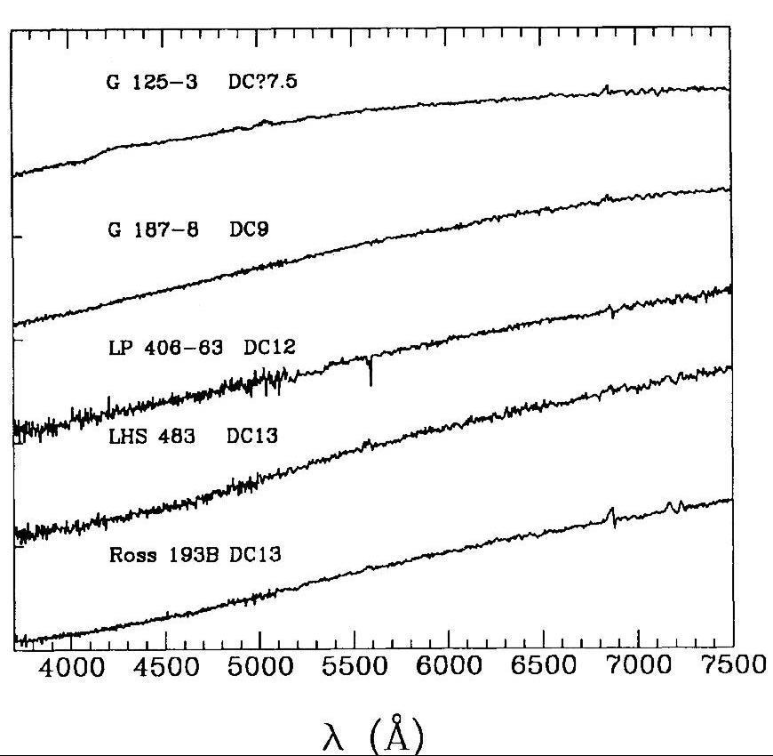
Figura 11 : Espectros de estrellas DC.
- DX: espectro no clasificado
DIAGRAMA HERTZPRUNG RUSSELL:
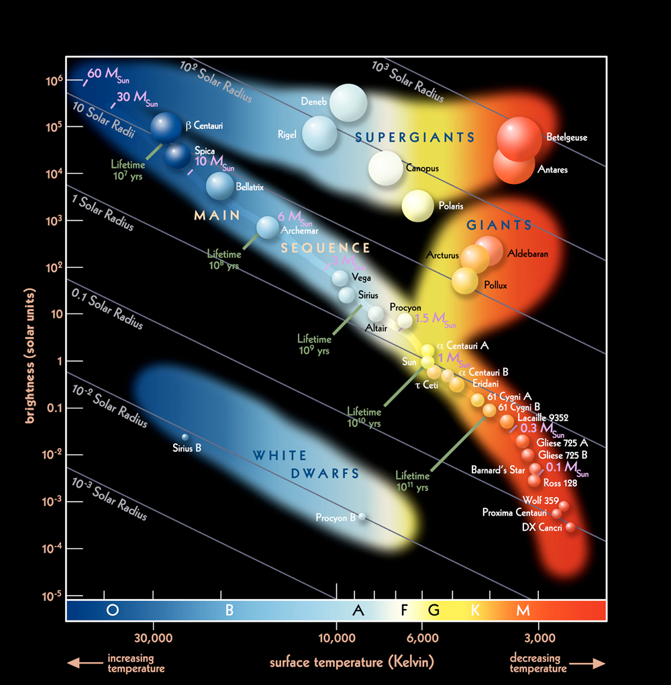
figura 3: En esta imagen vemos donde están ubicadas las enanas blancas en el diagrama H-R
ENFRIAMIENTO:
Todavía no sabemos qué le pasará a la enana blanca cuando llegue a temperaturas extremadamente frías, ya que el universo aún no tiene la edad suficiente para que habite una estrella de estas características. Pero sabemos que se están enfriando y eso nos brinda información importante.
Investigadores estudiaron el proceso de enfriamiento de una enana blanca y se llegó a que no es lineal, sino que hay variaciones, por ejemplo en enfriarse de 7000K a 6500K y de 6500K a 5000K se enfrió lo mismo, 500K, pero se puede haber hecho en tiempos muy distintos . En esto influye un proceso de cristalización que sucede en el núcleo.
Lo que sucede en el interior es que llegado a una determinada temperatura el núcleo se empieza a cristalizar, como esto es un cambio de fase, un cambio de estado de la materia pero no de composición, se libera calor latente y energía gravitacional.
El proceso que se mencionó anteriormente es muy importante que sea bien estudiado y entendido, que pueda ser calculado y que haya buenos modelos ya que nos brinda información muy valiosa. Gracias a estas viejas estrellas y la determinación del tiempo de enfriamiento se puede determinar con mayor precisión la edad de, por ahora, regiones en la vía láctea (sin olvidarse de que estas estrellas cuanto más lejos estén es más difícil de observarlas).
Por lo tanto, las enanas blancas son utilizadas para determinar edades de sistemas estelares y así tener un mejor conocimiento de nuestro universo. Sin olvidarnos de que puede servir para otros campos; como por ejemplo la física del plasma.
SISTEMAS BINARIOS:
Suponiendo a una enana blanca acompañada de otra estrella se pueden generar diferentes fenómenos:
>SUPERNOVA DEL TIPO 1A:
Para entender este fenómeno primero vamos a hablar del Lóbulo de Roche.
El lóbulo de roche rodea a las estrellas del sistema binario y determina un volumen para cada una, donde el material que esté dentro de ese lóbulo pertenece a la estrella correspondiente. Este material está ligado gravitacionalmente con la estrella por eso cuando alguna de las estrellas se expande y sobrepasa el lóbulo de roche le transfiere masa a su compañera. Esta transferencia se produce en un punto específico llamado L-1 (puntos de lagrange)
figura 4: En la figura podemos apreciar cómo sería en un sistema compuesto por dos estrellas el lóbulo de Roche y el punto de Lagrange.
Una supernova del tipo 1a se genera en un sistema binario constituido por generalmente una gigante roja y enana blanca donde esta última aumenta su masa gracias a su compañera (también aumenta su densidad). No nos tenemos que olvidar que existe un límite para la masa de las enanas blancas.
Entonces como tenemos una gigante roja, la envoltura de ésta a medida que evolucione aumenta su volumen, si esto invade el lóbulo de roche de la enana blanca entonces el material que se expandió será atraído y hace que la masa de la enana blanca vaya aumentando. Este material se transfiere a partir del punto L-1. En un momento se llegará al límite de Chandrasekhar, lo que generará la explosión en la enana blanca.
La explosión genera que la enana blanca se destruya en la mayoría, lo que hace que su campo gravitatorio desaparezca y que la trayectoria de la otra estrella cambie si es que sobrevive a la explosión.
Para que se produzca el fenómeno este sistema debe cumplir algunas condiciones.
-
Estrellas de masas intermedias y bajas, donde la suma de sus masas es mayor 1.4 masa solares (a la masa de Chandrasekhar)
-
Deben estar lo suficientemente cerca como para que el lóbulo de Roche sea invadido por la envoltura de la gigante roja
-
Debe producirse una absorción rápida del material ya que si no fuese así se produciría una nova
Además de tener un sistema binario conformado por una enana blanca y una estrella más masiva, se puede tener el caso de que sean dos enanas blancas. Con el tiempo estas dos enanas blancas en rotación se van acercando y acelerando hasta que se funcionan. Esto hace que se supere el límite de Chandrasekhar entonces el carbono inicia su combustión y causa la explosión.
Las supernovas 1a tiene la gran importancia de que gracias a ellas podemos calcular distancias. Como el estallido se produce a partir de enanas blancas que conocemos las características de estas, sabemos que sucede cuando se llega a la masa crítica, entonces podemos determinar la luminosidad. Que además Hay que destacar que estos eventos ocurren para composiciones muy parecidas (orígenes similares) por lo que la energía liberada es muy similar para todas las supernovas. Por esto se las llama “candelas estándar”, ya que conocemos el brillo intrínseco. Entonces si vemos que la magnitud aparente (la observada) es más débil deducimos que es porque está más lejos. Por lo tanto esto nos permite calcular distancias y además como su luminosidad es mucho mayor que otros objetos se puede llegar a calcular distancias mayores.
También se usó esta propiedad estándar para medir la expansión del universo, para demostrar que la expansión es de manera acelerada, lo que luego llevó a la propuesta de una forma desconocida de energía, la “energía oscura”, que sería la causante de que la expansión del universo sea acelerada.
Figura 5: Podemos apreciar la explosión de una supernova 1a (SN 2014J) en la galaxia M82 (marcada con una cruz el lugar exacto).
En la parte superior de la imagen se pueden ver la expansión que generó la explosión, llamado “eco de luz”
>Estrellas variables cataclísmicas:
En el proceso anterior en la enana blanca se generaba una explosión llamada supernova 1a, pero también podemos tener el caso donde en el sistema binario conformado por enana blanca y una estrella evolucionada se produzca un evento llamado “Nova”.
En este caso la compañera de la enana blanca emite un viento y parte de ese gas se acumula en la superficie de la enana blanca y se calienta hasta llegar a una temperatura donde se produce una explosión termonuclear.
A diferencia de la supernova en este proceso la enana blanca sobrevive, además de que la explosión es menos potente que la de las supernova 1a.
Referencia:
>http://iopscience.iop.org/article/10.1086/133228/pdf
>https://www.nasa.gov/topics/universe/features/keck_ophiuchi.html
>https://www.jpl.nasa.gov/news/news.php?feature=7086
>https://www.pagina12.com.ar/diario/ciencia/19-231863-2013-10-23.html
>https://www.agenciasinc.es/Noticias/Calculan-con-precision-la-edad-de-las-estrellas
>http://evolgroup.fcaglp.unlp.edu.ar/THESES/practica-melendez.pdf
>https://www.nasa.gov/image-feature/goddard/2017/hubble-shows-light-echo-expanding-from-exploded-star
>https://www.nasa.gov/multimedia/imagegallery/image_feature_468.html